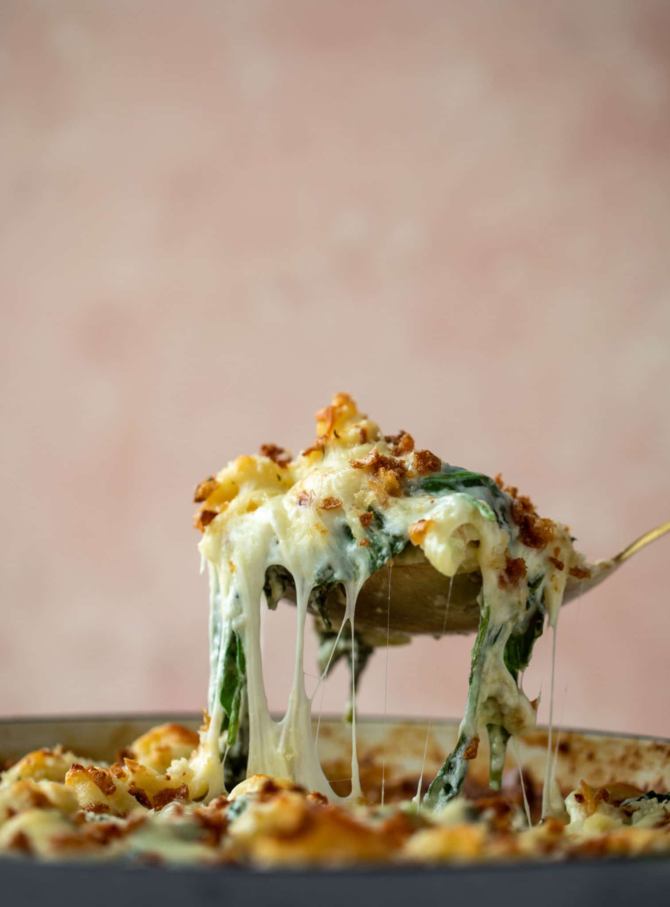

Mac n Cheese

Description
A delightfully easy Macaroni Cheese recipe that you can whip up
with basic pantry and fridge staples, with the option
of adding extra tasty ingredients to maximise on flavour.
The cheese sauce is the heart of this Macaroni Cheese recipe
and if you have never made a cheese sauce before,
never fear because I have written detailed instructions
to ensure you make a creamy cheese sauce, first time!
Ingredients
- 1 pound short cut pasta, cooked according to package directions
- 4 tablespoons unsalted butter
- 1 sweet onion, diced
- 3 garlic cloves, minced
- pinch of salt and pepper
- 4 tablespoons flour
- 1/4 teaspoon freshly ground nutmeg
- 12 ounces fresh baby spinach
- 2 1/2 cups of milk
- 12 ounces fontina cheese, freshly grated
- 6 ounces white cheddar, freshly grated
- 2 ounces parmesan cheese, freshly grated
- 1/2 cup crispy onions or breadcrumbs, for topping
Steps
- Preheat the oven to 350 degrees F.
Heat a large oven-safe pot over medium-low heat and add the butter. Stir in the onion and
garlic with a pinch of salt and pepper. Cook, stirring often, until the onions have softened.
- At this time, you can also cook the pasta in another pot. You can cook it
before too - just make sure to give it a quick spritz of olive oil so it doesn't
stick together.
- Toss all the grated cheese together.
- Stir the flour into the onions to create a roux. Cook for 2 to 3 minutes, until it becomes
golden in color and starts to smell nutty. Slowly stream in the milk while stirring constantly.
The mixture will begin to come together and thicken.
Stir in the nutmeg.
- Add in the spinach - it will seem overwhelming at first, but it will quickly cook down!
Stir until it cooks down and softens.
- Once the spinach cooks down, stir in almost all
of the cheese (reserve a bit for topping) and the pasta.
Toss it together over and over until it is combined.
- Top with the remaining grated cheese. Top with crispy onions.
Bake for 35 to 30 minutes, until golden and bubbly.
- Gaze upon the glory of your most majestic concoction, and weep at it's elegant aroma,
spectacularly creamy taste, and superb figure.